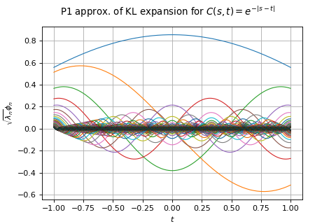

KarhunenLoeveP1Algorithm¶
(Source code, png)

- class KarhunenLoeveP1Algorithm(*args)¶
Computation of Karhunen-Loeve decomposition using P1 approximation.
- Parameters:
- mesh
Mesh The mesh
 that discretizes the domain
that discretizes the domain  .
.- covariance
CovarianceModel The covariance function to decompose.
- sfloat,

The threshold used to select the most significant eigenmodes, defined in
KarhunenLoeveAlgorithm.
- mesh
Notes
The Karhunen-Loeve
 algorithm solves the Fredholm problem associated to the covariance function
algorithm solves the Fredholm problem associated to the covariance function  : see
: see KarhunenLoeveAlgorithmto get the notations.The Karhunen-Loeve
approximation uses the functional basis  where
where  are the basis functions of the finite element space associated to , which vertices are
are the basis functions of the finite element space associated to , which vertices are  .
.The covariance function
 is approximated by its approximation
is approximated by its approximation  on :
on :![\hat{\mat{C}}(\vect{s},\vect{t})=\sum_{\vect{s}_i,\vect{s}_j\in\cV_N}\mat{C}(\vect{s}_i,\vect{s}_j)\theta_i(\vect{s})\theta_j(\vect{t}), \quad \forall \vect{s},\vect{t}\in\cD_N]()
The Galerkin approach and the collocation one are equivalent in the
approach and both lead to the following formulation:
where
 with
with ![G_{i\ell}= \int_{\cD} \theta_i(\vect{s})\theta_\ell(\vect{s})\, d\vect{s}]() ,
,  .
.Though the eigenvalues computation is performed by LAPACK by default, several other solvers can be used. The solver to use must be specified by setting
KarhunenLoeveP1Algorithm-EigenvaluesSolverkey inResourceMap. Some solvers set limits to the number of eigenvalues they can compute with regards to the size of the problem. The following table summarizes the supported solvers and their maximum number of eigenvalues for a problem of size :
:Solver
ResourceMap key
Maximum EV number
Lapack
LAPACK
Spectra
SPECTRA

For large dimension problems, it can be useful to generate the covariance matrix of the problem as a
HMatrixinstead of a standard dense matrix. In this case, one can setKarhunenLoeveP1Algorithm-CovarianceMatrixStoragekey inResourceMaptoHMAT(instead ofDENSE).Examples
Create a Karhunen-Loeve P1 algorithm:
>>> import openturns as ot >>> mesh = ot.IntervalMesher([10]*2).build(ot.Interval([-1.0]*2, [1.0]*2)) >>> s = 0.01 >>> model = ot.AbsoluteExponential([1.0]*2) >>> algorithm = ot.KarhunenLoeveP1Algorithm(mesh, model, s)
Run it!
>>> algorithm.run() >>> result = algorithm.getResult()
Methods
Accessor to the object's name.
Accessor to the covariance model.
getId()Accessor to the object's id.
getMesh()Accessor to the mesh.
getName()Accessor to the object's name.
Accessor to number of modes to compute.
Get the result structure.
Accessor to the object's shadowed id.
Accessor to the threshold used to select the most significant eigenmodes.
Accessor to the object's visibility state.
hasName()Test if the object is named.
Test if the object has a distinguishable name.
run()Computation of the eigenvalues and eigenfunctions values at nodes.
setCovarianceModel(covariance)Accessor to the covariance model.
setName(name)Accessor to the object's name.
setNbModes(nbModes)Accessor to the maximum number of modes to compute.
setShadowedId(id)Accessor to the object's shadowed id.
setThreshold(threshold)Accessor to the limit ratio on eigenvalues.
setVisibility(visible)Accessor to the object's visibility state.
- __init__(*args)¶
- getClassName()¶
Accessor to the object’s name.
- Returns:
- class_namestr
The object class name (object.__class__.__name__).
- getCovarianceModel()¶
Accessor to the covariance model.
- Returns:
- covModel
CovarianceModel The covariance model.
- covModel
- getId()¶
Accessor to the object’s id.
- Returns:
- idint
Internal unique identifier.
- getName()¶
Accessor to the object’s name.
- Returns:
- namestr
The name of the object.
- getNbModes()¶
Accessor to number of modes to compute.
- Returns:
- nint
The maximum number of modes to compute. The actual number of modes also depends on the threshold criterion.
- getResult()¶
Get the result structure.
- Returns:
- resKL
KarhunenLoeveResult The structure containing all the results of the Fredholm problem.
- resKL
Notes
The structure contains all the results of the Fredholm problem.
- getShadowedId()¶
Accessor to the object’s shadowed id.
- Returns:
- idint
Internal unique identifier.
- getThreshold()¶
Accessor to the threshold used to select the most significant eigenmodes.
- Returns:
- sfloat, positive
The threshold
 .
.
Notes
OpenTURNS truncates the sequence
 at the index
at the index  defined in (3).
defined in (3).
- getVisibility()¶
Accessor to the object’s visibility state.
- Returns:
- visiblebool
Visibility flag.
- hasName()¶
Test if the object is named.
- Returns:
- hasNamebool
True if the name is not empty.
- hasVisibleName()¶
Test if the object has a distinguishable name.
- Returns:
- hasVisibleNamebool
True if the name is not empty and not the default one.
- run()¶
Computation of the eigenvalues and eigenfunctions values at nodes.
Notes
Runs the algorithm and creates the result structure
KarhunenLoeveResult.
- setCovarianceModel(covariance)¶
Accessor to the covariance model.
- Parameters:
- covModel
CovarianceModel The covariance model.
- covModel
- setName(name)¶
Accessor to the object’s name.
- Parameters:
- namestr
The name of the object.
- setNbModes(nbModes)¶
Accessor to the maximum number of modes to compute.
- Parameters:
- nint
The maximum number of modes to compute. The actual number of modes also depends on the threshold criterion.
- setShadowedId(id)¶
Accessor to the object’s shadowed id.
- Parameters:
- idint
Internal unique identifier.
- setThreshold(threshold)¶
Accessor to the limit ratio on eigenvalues.
- Parameters:
- sfloat,
The threshold
defined in (3).
- sfloat,
- setVisibility(visible)¶
Accessor to the object’s visibility state.
- Parameters:
- visiblebool
Visibility flag.

{kind=link}